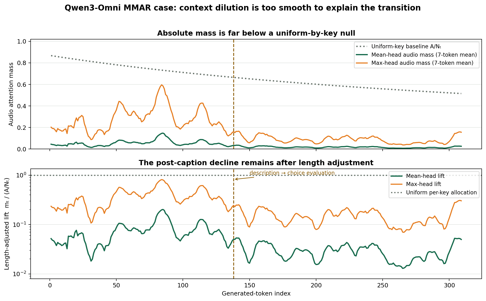
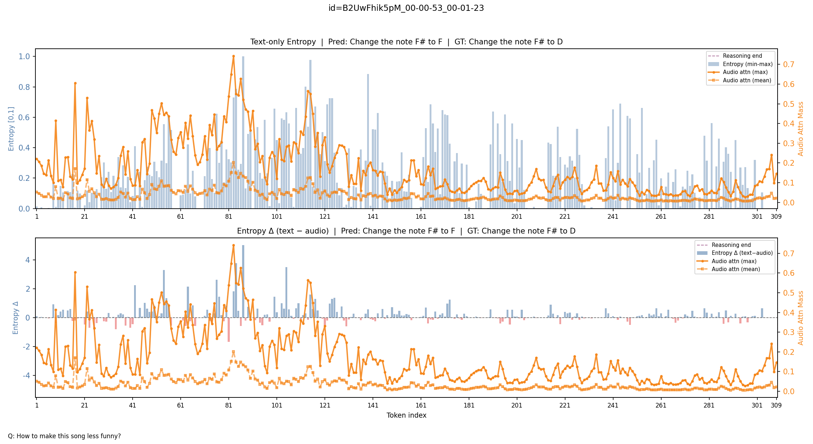
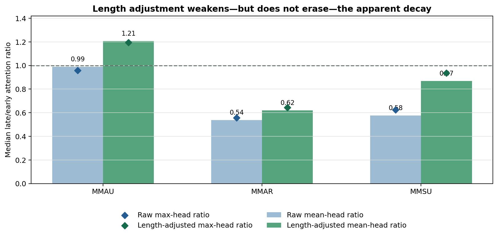
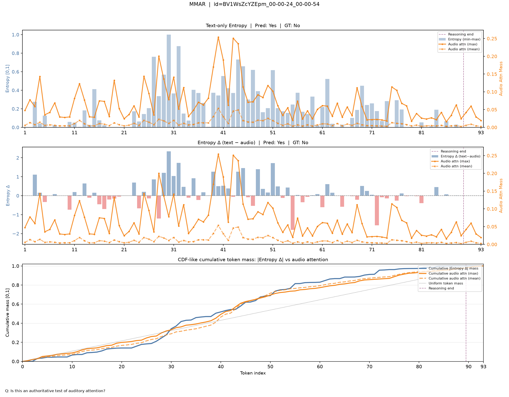
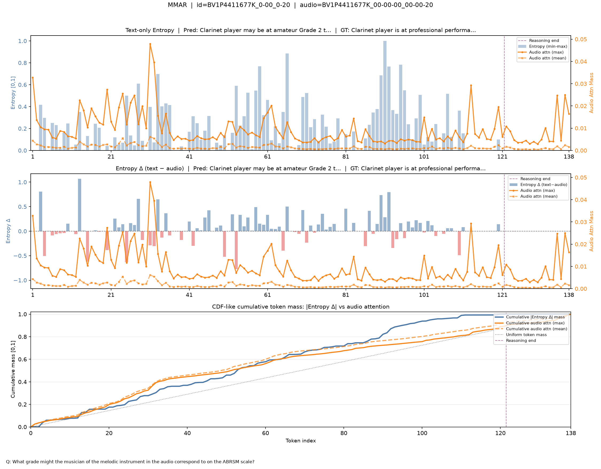
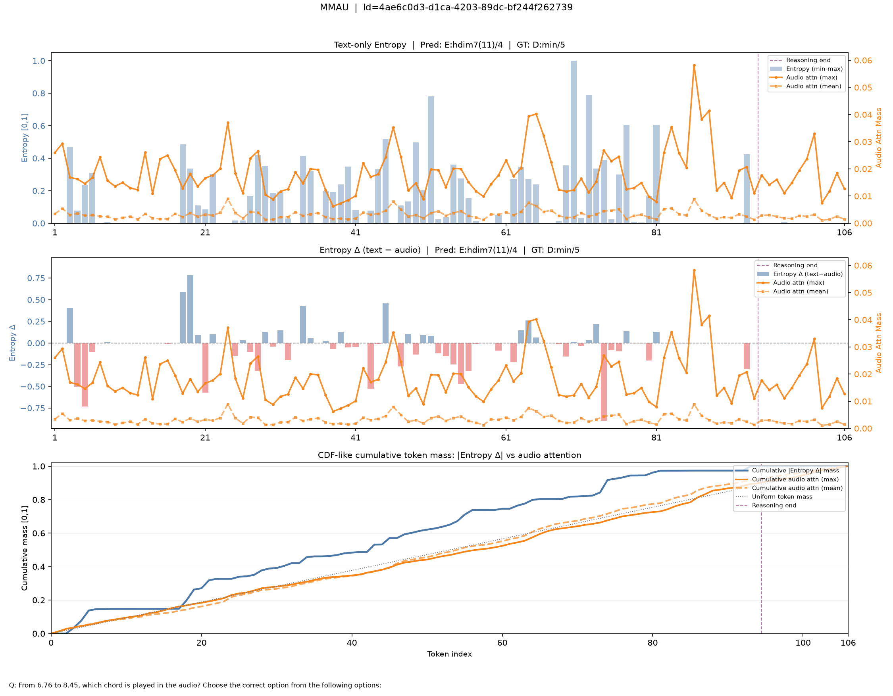
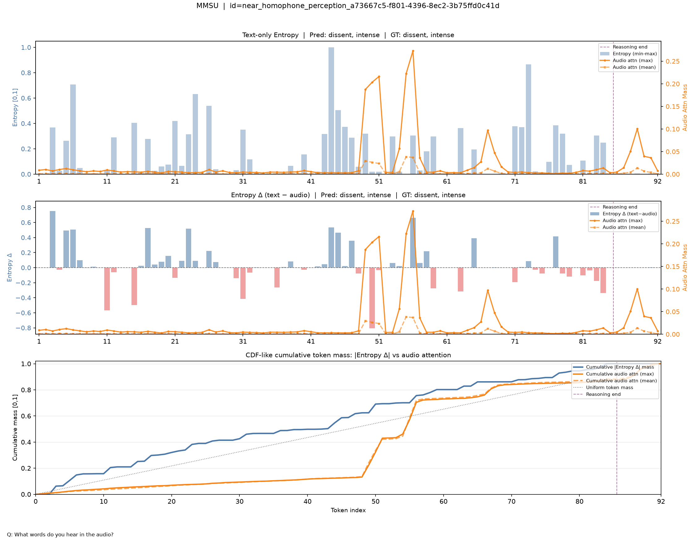
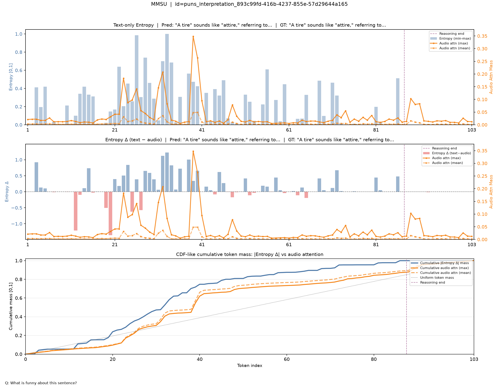

Bottom line
Plot both the amount and the preference
Keep raw audio-attention mass as the primary routing quantity. Add a uniform-key baseline and a length-adjusted lift curve. Mark reasoning-phase boundaries, and decompose the competing context into audio, static prompt text, and generated history.
The reviewer’s denominator argument is real: as a causal response grows, the fixed audio region competes with more generated keys. That mechanism predicts a smooth decline proportional to the audio token share. It does not predict a discrete drop synchronized with the model moving from acoustic description into answer selection.
Reviewer concern
A useful null, not a neural expectation
For generated position \(t\), let \(m_t\) be the total attention assigned to audio keys, \(A\) the number of valid audio keys, and \(N_t\) the total number of causally available non-padding keys. Uniform attention over available keys would assign:
The lift \(L_t=1\) denotes uniform allocation per available key; \(L_t<1\) means that audio is underweighted relative to its token count. Uniform attention is only a descriptive null: real heads have content, position, sink, and specialization biases.
| System · benchmark | Audio keys | Prefix keys | Uniform share | Observed mean | Observed max |
|---|---|---|---|---|---|
| Qwen · MMAR example | 391 | 450 | 0.867 | 0.0516 | 0.2209 |
| MOSS · MMAU | 125 | 185.5 | 0.670 | 0.0023 | 0.0213 |
| MOSS · MMAR | 275.5 | 361 | 0.796 | 0.0044 | 0.0312 |
| MOSS · MMSU | 33.5 | 88 | 0.383 | 0.0020 | 0.0165 |
The first generated position therefore does not strongly attend audio merely because audio occupies much of the history. In every row of Table 1, observed mean-head audio mass is orders of magnitude below the key-count share. In the Qwen case, audio receives 0.052 mass, leaving 0.948 for 60 non-audio keys—the static prompt plus the current teacher-forced query position. The average non-audio key receives approximately 120× as much attention as the average audio-region key. This verifies strong non-audio focus, although the present collector cannot yet separate static text-prompt keys from that query position.
Qwen case study
The denominator changes gradually; the routing regime changes faster
The focal MMAR prompt contains 391 detected audio-region keys in a 450-token prefix. Its uniform baseline falls from 0.867 at the first response position to 0.515 at the last—a gradual 40.6% reduction across all 309 generated tokens.

B2UwFhik…. Top: raw audio mass and the smooth uniform-key null. Bottom: length-adjusted lift on a log scale. The approximate description-to-choice boundary is marked at token 138. Seven-token moving averages are shown for readability; calculations use the original per-token values.During the manually aligned description window, tokens 80–124, median mean-head raw mass is 0.058 and normalized lift is 0.085. During choice evaluation, tokens 145–219, they fall to 0.017 and 0.027. The normalized measure therefore preserves the qualitative change.

The synchronized drop supports a routing-shift hypothesis, but attention alone is not causal attribution. The entropy change under audio removal and answer changes under silence are complementary evidence, not interchangeable measurements.
MOSS-Audio-4B-Thinking
Normalization matters, especially outside MMAR
We applied the simple \(m_t/(A/N_t)\) adjustment diagnostically to eight randomly selected examples each from MMAU, MMAR, and MMSU. Early and late values are medians over the first and last quarters of the thinking tokens; each table cell reports mean-head / max-head aggregation.

| Benchmark | Raw mean / max | Adjusted mean / max | Strong-decay cases | Null last / first |
|---|---|---|---|---|
| MMAU | 0.99 / 0.96 | 1.21 / 1.19 | 2/8 → 1/8 | 0.65 |
| MMAR | 0.54 / 0.56 | 0.62 / 0.64 | 4/8 → 3/8 | 0.79 |
| MMSU | 0.58 / 0.62 | 0.87 / 0.94 | 3/8 → 2/8 | 0.51 |
The control changes the story. MMAU’s median adjusted ratio rises above 1, and MMSU moves much closer to parity. MMAR still shows a median adjusted decline and three strong-decay cases out of eight. Length dilution is therefore a partial explanation, not a complete one.
Held-out test benchmarks
The token-wise shape is not universally decreasing
Figures 4–9 sample MMAU, MMAR, and MMSU rather than AVQA. Each source plot contains raw token-wise entropy, the entropy difference between text-only and audio-conditioned scoring, mean/max audio-attention mass, and a CDF-like cumulative row. The cumulative row answers when mass accumulates; it is not a correction for context length.






Recommended plotting standard
One figure should answer four different questions
- Absolute routing
Keep raw audio mass \(m_t\). It retains a direct probability-mass interpretation and shows how much attention reaches the audio region.
- Length control
Overlay \(A/N_t\), then add lift \(L_t=m_t/(A/N_t)\) with a reference line at 1. Count valid causal keys from the actual attention mask.
- Competition destination
Report audio, static prompt text, and generated-prefix mass separately, together with their per-key densities. This reveals where attention goes after an acoustic-description phase ends.
- Functional control
Keep the real-audio versus silence entropy/log-probability difference and final-answer change. Attention is routing evidence; intervention measures whether the audio changes computation.
A symmetric per-key comparison is useful as a secondary statistic:
Plot \(\log R_t\) with a zero reference line. Positive values favor audio per key; negative values favor the non-audio context. This is more interpretable than dividing audio mass by the number of audio tokens alone.
| Quantity | Question answered | Reference | Primary caveat |
|---|---|---|---|
| Raw audio mass \(m_t\) | How much routing reaches audio? | 0 to 1 | Changes as the competing key set grows |
| Lift \(L_t\) | Is audio favored relative to its key share? | 1 = uniform per key | Uniform is a null, not a trained-model expectation |
| Log odds lift \(\log R_t\) | Audio versus non-audio per-key preference? | 0 = equal per-key density | Needs clipping near mass 0 or 1 |
| Cumulative token mass | When does the sequence spend its total mass? | Diagonal = uniform over response positions | Not a context-length correction |
| Audio-removal entropy delta | Does audio alter token prediction? | 0 = no entropy change | Silence is an intervention with its own distribution shift |
Status and limitations
What is measured, and what remains to implement
- The MOSS study contains 24 examples—eight per test benchmark, selected randomly with seed 17—and should not be read as a benchmark confidence interval.
- The MOSS normalization in Table 2 was applied to already aggregated mean/max curves as a diagnostic. The production implementation should normalize every layer/head first, then reduce. This matters most for max-head analysis.
- Qwen’s audio-region span follows the existing token-ID detector and includes the model’s audio wrapper region. The primary production mask should count actual audio-feature tokens, with wrappers and time markers reported as a sensitivity analysis.
- The Qwen caption boundary at token 138 is manually aligned to “Next, evaluating the choices.” Automated phase annotation or a registered change-point test should replace it for aggregate claims.
- MOSS values use decoder layers 28–35. Qwen’s focal curve averages all 48 decoder layers. Layer-resolved reporting should accompany any cross-model claim.
Reproducibility snapshot
Source Qwen run: exp/analysis/mmar/Qwen3-Omni-30B-A3B-Thinking/v7-20260415-030139
Source MOSS runs: exp/analysis/{mmau,mmar,mmsu}/MOSS-Audio-4B-Thinking/v1-20260905-entropy-cdf
The site repository contains the compact numeric snapshot, selected published figures, and scripts that rebuild this page and the two summary plots.